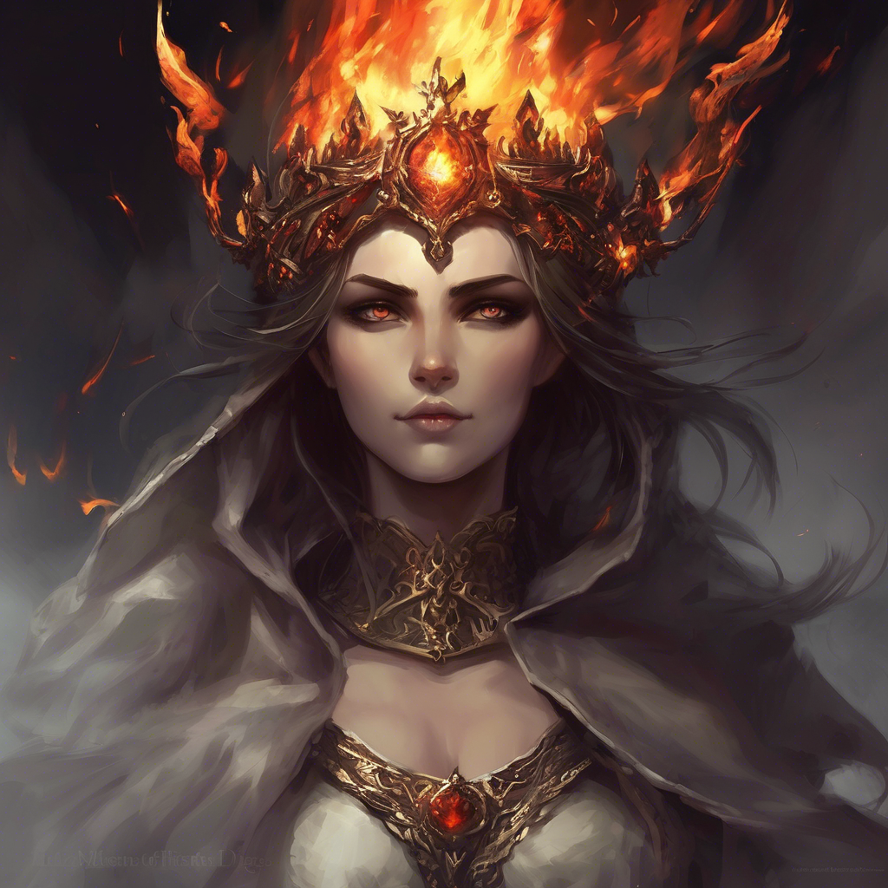

A Tűzkorona most már a tiéd. Ahogy fejedre helyezed, a világ megváltozik. A lángok, melyek eddig elválasztottak a múlt és jövő között, most engedelmesen hajolnak meg előtted. A kripta sötétsége szertefoszlik, a falak újra fényleni kezdenek, és mintha egy pillanatra hallanád az ősi lángmágus hangját: „Az új korszak vezetője megérkezett.” Lépteid alatt izzó jelek gyúlnak ki, majd a kripta kijárata lassan kitárul. Mikor kilépsz a napfényre, koronával a fejeden, már nem vagy az az utazó, aki ide belépett. Te vagy a Láng Ura. És ez még csak a kezdet...
Gratulálok! – Sikeresen teljesítetted a kalandot!